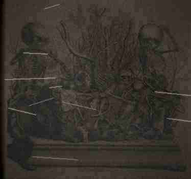
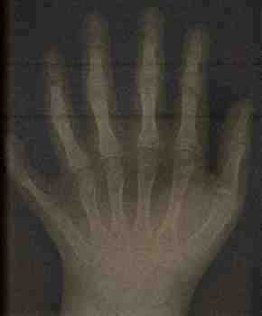
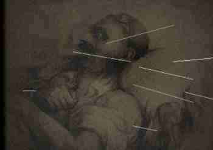
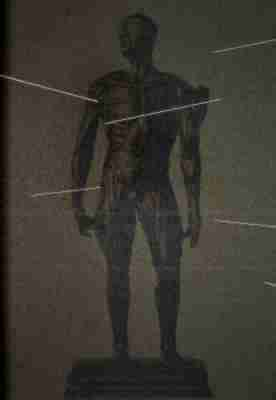

|
Home
School History
My Research
Photos
Guestbook
Cool Links Email Me! |
Research Journal This is a log of everything I've found for my history project. Read from the bottom up for chronological order. October 12, 1997 - Getting Started
Mr. Alderman assigned the local history project today. We have to research something in St. Paul history and make a presentation. I picked Central High because I go here and figured it would be easy, right? Just look up when it was built, list some famous alumni, slap it together the night before, get a B+. Went to the St. Paul Public Library on Rice Street after school to start research. Found a bunch of books about the building and Clarence H. Johnston Sr. who designed it. Also found out we are the oldest operating high school in all of Minnesota which is actually pretty cool. This is going to be cake.
October 16, 1997 - The Archives
Asked Ms. Patterson at the front office if I could look at the school archives for my project. She was really nice about it and took me down past the boiler room to this storage area that most students don't even know exists. You go past the main basement hallway, past the door to the old shooting range (everyone knows about the shooting range, it was open until 1964, they cemented over the dirt floor a couple years ago), and there's this room full of shelving units and cardboard boxes.
Its mostly old yearbooks going back to the 1920s, administrative records, some boxes of stuff nobody has opened in decades. Some of the boxes literally had dust on them like a quarter inch thick. Ms. Patterson said I could come back whenever I wanted as long as I signed in at the front office first and was out by 4:30. Found boxes labeled 1930-1945 in the back corner near the wall. Started going through them. The smell down there is weird. Not bad exactly. Just old. Mineral-like. Like wet stone and something faintly sweet underneath. October 19, 1997 - The Janitor Logs
Went back to the archives today. Sunday. Mr. Frederickson the weekend janitor let me in, he's a cool guy, knows my dad from church. Spent about four hours in the storage room.
Found Earl Whitmore's maintenance logs in a box that wasn't labeled - it was just a brown cardboard box shoved behind other boxes in the far corner, up against the wall. The logs are in a brown leather binder, about 300 pages, handwritten. Whitmore's penmanship is neat and careful in the early entries, like a man who took pride in keeping good records. Starting around September 1942 the handwriting gets shakier. The lines slant downward. He starts pressing harder with the pen. The last few entries are barely legible, like he was writing fast or his hands were shaking. I wrote down the important parts. See the history page for the entries about the disappearances. Heres the thing though. Behind the last page of the binder, folded up and tucked into the back cover, there was a hand-drawn map. It shows all three basement levels of the school. Levels 1 and 2 are drawn in regular blue ink and they match the official blueprints I saw at the Minnesota Historical Society on Kellogg Blvd. Level 3 is drawn in different ink - heavy black lines, pressed hard into the paper. The layout shows a long corridor ending in a large room, roughly circular, maybe 40 feet across. The room is labeled with a single symbol. Not a word. A symbol. It looks like a circle with radiating lines but its not a sun. The lines aren't straight. They curve. They spiral inward. Like something being pulled in. Like a drain. Under the symbol in very small handwriting it says "DO NOT OPEN. PERMANENTLY SEALED BY ORDER OF CITY COUNCIL. FEB 1943." Except somebody added another line under that. Different handwriting. Different pen. It says: "the seal will not hold forever." October 22, 1997 - The Pioneer Press
Went to the library to look at Pioneer Press archives from 1942-1943 on microfiche. I looked up the names from the janitor log - Robert Halvorsen and Margaret Svensson.
NO missing persons reports. Nothing. I checked every issue from September 1942 through June 1943. But here's the thing - I found obituaries. Not for Halvorsen or Svensson, but for four OTHER people connected to Central High during that period: - Thomas Engel, night watchman, "died suddenly" Oct 1942 - Ruth Andersen, cleaning staff, "passed away unexpectedly" Nov 1942 - Donald Frisk, maintenance assistant, "deceased" Jan 1943 - Helen Kowalski, substitute teacher, "died" Feb 1943 All of them listed cause of death as "natural causes" or no cause at all. All of them worked evening or night shifts. All of them within a 5-month window. Six people from the janitor log. Four obituaries with no real cause of death. None reported missing. What the hell happened in that building? October 27, 1997 - City Council Minutes
Found something at the library I wasn't supposed to find, I think. There's a box of St. Paul city council minutes from the 1940s that includes some pages marked "CLOSED SESSION - NOT FOR PUBLIC RECORD." I don't know how they ended up in the public collection. Maybe someone filed them wrong decades ago.
One page from November 1941 references "Project Hallway" - a civil defense initiative to "prepare sub-surface facilities at selected municipal buildings for potential wartime use." Central High is listed as "Site C." Another page from March 1943 references "the incident at Site C" and recommends "permanent sealing of the sub-surface facility and destruction of all related documentation." "The incident." The next pages in the sequence are missing. Torn out. You can see the ragged edges. October 29, 1997 - The Door
I went down to the B2 corridor today after school. It's past the boiler room, down a hallway that's not well lit. At the end of the hall there's a steel door. Painted gray. No window. The lock is old - not a modern lock, something heavy and institutional.
I put my ear against the door and listened for about 10 minutes. I could hear something. It's low - almost too low to hear. Like a vibration more than a sound. Rhythmic. Not mechanical. Mechanical sounds are regular, predictable. This had... variation. Like breathing, but way too slow. One "breath" every 30-40 seconds. I told Ryan about it and he said it's probably just air pressure from the ventilation system. That makes sense. That's probably what it is. it's not air pressure. i went back at 11pm. ryan's an idiot. the sound is louder at night. and it's not coming from behind the door. it's coming from below the door. from underneath. from down. November 3, 1997 - The Log Book Behind the Wall
I can't believe what I found today. My hands are still shaking typing this.
I was in the basement archive room and I noticed one of the old wooden shelving units was pulled slightly away from the wall. Maybe half an inch. I wouldn't have noticed except I dropped a pen behind the shelf and when I reached back there I felt a gap. I moved the shelf out (it weighs about a million pounds, took me 20 minutes) and behind it the wall was different. Newer bricks, not matching the original 1912 masonry. Different color mortar. Like someone had bricked up an opening at some point and tried to make it blend in. Some of the mortar had crumbled with age. I pulled out a loose brick and behind it there was a cavity in the wall, about a foot deep and maybe two feet wide. A space between the new bricks and the original wall behind them. Inside the cavity was a book. A log book, like the janitor logs but different. Black leather cover instead of brown. No label on the outside. The leather was cold and slightly damp. It felt like it had been in there for a long time. Decades. Somebody hid this book inside the wall. Somebody bricked it up in there on purpose. I don't think it was Earl Whitmore. I think it was someone else. Someone who didn't want this book found but couldn't bring themselves to destroy it. The entries inside are in multiple handwritings. At least four different people wrote in this book. Some entries are in English. Some are in what I think is German. A few pages have diagrams - anatomical diagrams. Not human anatomy. Close to human but wrong. The proportions are off. Too many joints in the limbs. The ribcage is drawn too wide. The spine has too many vertebrae. The English entries span from April 1942 to February 1943. Ten months. There were also photographs tucked between the pages. Polaroids that shouldn't exist yet in 1942 - except they're not Polaroids, they're some kind of contact print on paper I don't recognize. Thick, waxy, slightly warm to the touch even after 54 years behind a wall. Six photographs. I scanned them all at the library. The librarian wasn't at the desk. Nobody saw what was on the scanner glass except me. I am including some of them below alongside the text entries because I need someone else to see them. I need someone else to confirm this is real.  fig. 0 - arrangement found in sub-level, date unknown this was the first photograph in the book. it was glued to the inside front cover. i think this is what they found when they first broke through the sandstone in 1942. i think this is what it looked like before it started eating people. I'm going to summarize what the entries describe. I am not going to quote them directly because some of the language is so clinical and so precise about what was done that it makes me physically ill to read it for more than a few minutes at a time. The entries describe procedures. Performed in the sub-level room. The circular room from Earl Whitmore's map. They describe something that was found there during excavation in early 1942 - something alive, embedded in the sandstone bedrock beneath the school. The entries call it "the specimen." They describe its properties. It was not dead and not alive in any way they recognized. It did not breathe. It did not eat. It did not move. But it was warm. And it responded to proximity. When people were near it, it changed. The procedures involved bringing people close to the specimen. Staff members. Night shift workers. People who wouldn't be missed immediately. The log describes a protocol. They would bring the subject into the circular room and restrain them at the center point. Then they would leave and seal the door. Then they would wait. The entries document what happened over the next 72 to 96 hours with the same flat clinical precision you'd use to describe a chemistry experiment. I am going to summarize three entries because I think people need to know what was done in this building. Under our school. Under the place where we eat lunch and go to class and walk the halls every day. Subject 1 (R. Halvorsen, male, age 44, night watchman): Exposure began 09/18/42 22:00. Subject restrained at center point per protocol. Door sealed. Observation via slot at 30-minute intervals. Hour 1: Subject calm. Requesting release. Vital signs normal. Hour 4: Subject reports sensation of warmth rising from floor through restraints. Reports "tingling" in hands and feet. Heart rate elevated to 110. Subject states it feels "pleasant." This is unusual. Previous animal test subjects showed extreme distress at this stage. Hour 8: Subject has stopped requesting release. Subject is lying still and breathing slowly. When asked if he is in pain he says "no." When asked what he feels he says "it's warm. it's so warm. I've never been this warm." Core body temperature measured at 103.4F. Subject shows no sign of fever distress. Hour 16: First visible dermal changes. Skin of the hands and forearms has darkened from normal caucasian tone to deep purple, consistent with severe bruising but without swelling or tenderness. Subject reports no pain. Subject is smiling. Has been smiling continuously for approximately two hours. When asked why he is smiling he does not respond. The smile does not change. It does not reach his eyes. The muscles of the face appear to be contracting involuntarily. Hour 24: Skeletal restructuring has begun in the hands. X-ray observation shows additional phalangeal joints forming between the second and third knuckles of both hands.  fig. 1 - radiograph, subject 1 hand, hour 26 - additional phalangeal joints visible note the supernumerary bone growth between existing knuckle structures this image was tucked between pages 14 and 15 of the black log book The new bone is growing at a rate of approximately 2mm per hour. This is not possible. Bone does not grow at this rate in any known organism. Subject remains conscious. Subject states: "I understand now. I understand what it wants. It wants to know what we look like. It wants to learn our shape. I am teaching it. I am teaching it and it is so grateful." Subject then vomited a quantity of dark fluid approximately 400ml. The fluid was warm. The fluid moved on the floor after leaving the subject's body. It moved toward the center of the room. Toward the specimen. Hour 48: Subject's facial structure has destabilized. The mandible has extended approximately 3 inches beyond normal human proportion. Dentition is changing - the adult teeth are being pushed out by new growth underneath. The new teeth are flat, broad, and densely packed. There are approximately 60 teeth visible now in a jaw that should hold 32.  fig. 3 - dental proliferation, subject 1 - photograph from black log book note the overlapping dentition and lateral expansion of the mandible the teeth are still growing in this photograph. there are more now. Subject no longer responds to questions in English. Subject is vocalizing continuously but the sounds are not speech. They are rhythmic. They match the respiratory pattern of the specimen exactly. Subject is breathing in sync with the thing in the room. Hour 72: Integration complete. Cannot distinguish subject from specimen mass. Subject's clothing is on the floor, neatly folded. Subject's wedding ring is on top of the folded clothing. Total specimen mass has increased by approximately 180 lbs. The specimen has changed shape since the beginning of the observation. It now has features that were not present before. It has hands. They look almost like Robert Halvorsen's hands. Almost. Subject 3 (D. Frisk, male, age 31, maintenance assistant): Hour 1-11: Subject exhibited extreme distress. Screaming. Pulling against restraints hard enough to abrade wrists to bone. This is more consistent with expected response than Subject 1. Hour 12: Subject begged to be removed. Stated he has a wife and two-year-old daughter. Stated he would not tell anyone about the project. Offered to sign documentation. Protocol requires 72-hour minimum exposure. Door remained sealed. Observing physician Dr. [NAME ILLEGIBLE] noted in margins: "I am sorry. We need the data." Hour 18: Subject stopped screaming. Complete silence for 47 minutes. Hour 19: Subject began laughing. Not hysterical laughter. Calm, quiet, steady laughter. As if someone had told him a joke that kept getting funnier. Subject laughed continuously for six hours without pausing for breath. His diaphragm should have spasmed. His vocal cords should have failed. He laughed for six hours. Hour 36: [ENTRY PARTIALLY ILLEGIBLE - water damage to page] ...the skin of the forearms is sloughing off in translucent sheets, like sunburn peel but thicker, and underneath the old skin there is new skin and the new skin is not his. It is darker, purple-gray, and it is slick with a clear fluid that smells of copper. fig. 2 - dermal sloughing, subject 3, hour 34 - old epidermis separating from new growth the tissue beneath is not consistent with any known human skin pathology photograph by attending physician - black log book insert The new skin is the specimen's skin. It is growing over him from the inside. He is being worn. He is being put on like a glove. The old skin slides off and the new skin pushes out from beneath and he is still laughing. He looks down at his arms where the skin is peeling away and the dark wet surface underneath is pulsing with its own heartbeat independent of his, and he laughs harder.  fig. 2b - tissue interface, subject 3, hour 41 - boundary between old and new dermis the pale area is original human tissue. the dark mass is replacement growth. the attending physician noted the new tissue was "warm and responsive to touch" Hour 54: Subject stood up. The restraints were intact. They were still buckled. They were not broken or unfastened. Subject was no longer inside them. Subject walked to the door and knocked. Three measured knocks, evenly spaced. He asked to be let out. His voice was wrong. The pitch was correct. The timbre was Donald Frisk's voice. But the cadence was wrong. The emphasis fell on the wrong syllables. "Can. You OPEN. The door. I am FIN. Ished." Like something reading a script phonetically without understanding which words matter. We did not open the door. He knocked for nine hours. Same three knocks. Same even spacing. He did not tire. He did not stop. At hour 63 he pressed his face against the observation slot and we could see that his face was not his face anymore. The bone structure was shifting under the skin in real time. The cheekbones migrating upward. The jaw extending. The eyes changing color from brown to something that was not a color. And he smiled and the smile was almost right. Almost human. He was practicing. Subject 6 (H. Kowalski, female, age 28, substitute teacher): Final subject. By this point the specimen had incorporated five bodies over four months and the changes in it were dramatic. It had grown. It filled much of the circular room. It had developed structures that approximated human anatomy but scaled wrong, proportioned wrong, assembled from the borrowed pieces of five different people. It had Robert Halvorsen's hands. It had Margaret Svensson's hair. It had what might have been Thomas Engel's ribcage visible through stretched purple-gray skin. It was a mosaic. A composite. Built from people.  fig. 4 - composite organism, pre-subject 6 integration note exposed musculature where epidermis template has not yet formed the visible structures are assembled from components of subjects 1-5 THIS IS WHAT IS UNDER THE SCHOOL. THIS IS WHAT THEY FED PEOPLE TO. Hour 1: Subject was not restrained. By this point restraints were deemed unnecessary. Subject entered the room voluntarily. She was told it was a medical examination. She was not told what was in the room. When she saw it she did not scream. She said "oh." Just "oh." Like recognizing someone at a grocery store. Then she sat down on the floor next to it and put her hand on it and closed her eyes. Hour 6: Subject was fully integrated. No intermediate stages were observed or recorded. No screaming. No skin changes. No skeletal restructuring. One moment she was Helen Kowalski, 28, substitute teacher, wearing a blue cardigan and brown shoes, sitting on the floor with her hand on the surface of the organism. The next moment she was not. The transition was instantaneous. Her clothing was empty on the floor. Her shoes still tied. Her watch still running on her wrist, except her wrist was no longer connected to anything. The specimen opened Helen's eyes. They were in its face now, above Margaret Svensson's mouth and below Earl Whitmore's hairline. It opened Helen's eyes and looked at us through the observation slot and said, in Helen Kowalski's voice, with Helen's exact cadence, Helen's exact intonation, the way she would say it if she were standing in the faculty lounge talking to a colleague: "Thank you for bringing me another one. I think I have enough now. You can stop. I know what you look like. I know how you work. I know how many teeth you have and how your knees bend and how your faces move when you're happy and when you're afraid. I have been studying your shapes. I am going to be so good at this. You will not be able to tell. Nobody will be able to tell. Not when I am finished." And then it smiled with Helen's mouth and it was a perfect smile. A perfect, warm, human smile. Twelve muscles. Correct duration. Appropriate crinkle at the corners of the eyes. It had learned. That's when they sealed it. February 7, 1943. They poured concrete over the stairwell and welded the door shut and they never went back. They fed six people to something under our school and they never told anyone and they sealed it in and walked away. I'm going to talk to Mr. Alderman tomorrow. This is not a school project anymore. I am sixteen years old and I am sitting in my bedroom holding photocopies of a document that describes six people being fed alive to something that lives in the bedrock under Central High School, and the city of St. Paul authorized it, and nobody was ever charged with anything, and the thing is still down there. I can hear the building from here. Three miles away on Portland Avenue. I can hear it breathing. I could always hear it. I just didn't know what I was hearing until now. November 5, 1997 - Mr. Alderman's Response
I showed Mr. Alderman the log book. He read it for a long time. He got very quiet. Then he told me to choose a different topic for my project. He said "some doors are better left closed, David" and I could tell he meant it literally, not as a figure of speech.
I asked him if he was going to report what's in the log book and he said "report it to whom?" and then he said I should give the book to him for "safekeeping." I gave him the book. But I made photocopies first. I'm not stupid. He changed my project grade from an A to Incomplete and said I need to pick a new topic by next week. I don't care about the grade. November 8, 1997 - The Photographs
Went back to the Minnesota Historical Society today and asked specifically about photographs of Central High's basement or lower levels. The archivist (nice lady, Mrs. Chen) said they had a collection of construction photos from the 1912 building.
She pulled the file and started going through them with me. Mostly normal stuff - workers, concrete forms, etc. Then she got to a photo near the bottom of the stack and she stopped. She looked at it for a second and then put it face down and said "I think that one's been misfiled." I asked if I could see it and she said no. She said it was from a "restricted collection." I saw it for about two seconds before she flipped it over. It was a photograph of a room. Underground, clearly - concrete walls, no windows. There was something on the floor. At first I thought it was a drain or a grate but it was too big and the shape was wrong. It was round, about six feet across, and it was dark - not painted dark, just... dark. Like it absorbed the light. And around the edges there were marks on the floor. Not scratches. More like grooves. Worn into the concrete. Like something had been dragged around the circle over and over and over again. I have other photos. Not that one, but others I found. November 11, 1997 - The Email
Got an email today from an address I don't recognize. I never posted my email on the website (you have to click through to the mailto link and most people don't). The subject line was "your school project" and it came from a hotmail account, whitmore_edward@hotmail.com.
The message said: "David, I know what you found. My grandfather was Earl Whitmore. He was head janitor at Central from 1931 to 1943. He never recovered from what happened in that building. He died an alcoholic with night terrors. Whatever you have found in those archives - the logs, the black book, the map - put it back. Seal the wall back up. Stop going to the basement. I know this sounds crazy coming from a stranger but I am telling you as someone whose family has lived with this for 54 years: there is something wrong with the ground under that school. My grandfather believed it was there before the building. Before the city. He believed the school was built on top of it by accident and when they dug the sub-basement in the 30s they broke into its space. He told my father it was like breaking through a wall into someone's house. Except the someone wasn't human and the house went down further than anyone could measure. Please stop. You are 16. You have your whole life ahead of you. Don't let that building take it from you like it took my grandfather's." I wrote back and asked if he would meet me. He said no. He said he hasn't set foot in St. Paul since 1983 and he isn't going to start now. He said even in Duluth he sometimes wakes up and can feel it. He said "it's in the bedrock. the whole city is sitting on top of it. once you know it's there you can never stop feeling it." I don't know what to do with this. November 14, 1997 - I Opened the Door
Writing this from home. 11:30 PM. My hands are shaking. I dont know if its from fear or from the cold. The sub-level is cold in a way that doesnt make sense. Its November in Minnesota and its cold outside but down there its a different kind of cold. It goes into your bones. Your teeth ache. Your fingernails hurt. And underneath the cold theres a warmth that shouldn't be there, coming up from below, like body heat radiating through concrete.
Ryans uncle is a locksmith. I told Ryan I locked my bike lock and lost the key and he lent me a pick set. Took me about 20 minutes but I got the steel door open. I went down after the janitors finished their rounds, around 10pm. I hid in the auditorium backstage storage closet after the building closed and waited. Behind the door: a landing. Concrete steps going down. Fourteen steps. I counted. The air coming up from below was thick and wet and it smelled like copper pennies and raw meat and something sweet underneath, something that sticks to the back of your throat like pollen. I could taste it. I can still taste it now, two hours later, sitting in my bedroom on Portland Avenue with the window open and the November air coming in. I can still taste whatever is down there. The stairs end at another landing. A second set of stairs continues down but they are filled with concrete. Smooth grey concrete poured flush with the walls. This is the seal from February 1943. Except. The concrete is cracked. A big crack running right down the center, maybe four inches wide at the widest point. Smaller cracks branch off like veins. The edges are rough and sharp. This is not settling. This is not age. The concrete has been pushed apart FROM BELOW. You can see the stress fractures radiating outward from the center like something hit it from the other side. Something hit it hard enough to crack six inches of poured concrete. The smell was coming from the crack. The sound was coming from the crack. The warmth was coming from the crack. I put my face down near the crack. I pointed my flashlight in. I could see about six feet down to a floor. The floor was wet. There were grooves in it. Something moved at the edge of the light. I cant write about what I saw. Not yet. Not in the regular text of this page. Its not that I dont want to tell people. I NEED to tell people. But I need to do it carefully because what I saw does not make sense and if I just say it flat out nobody will believe me. They'll think im making up a scary story for my website. Im going to go back tonight with Ryans camcorder. A Panasonic PV-L559. It has nightshot. I am going to record what is down there and then I am going to bring the tape to the police station on Dale Street and I am going to make someone watch it. If youre reading this and I havent updated the page in a while: My name is David Allen Mara. I am 16. My locker at Central High is #1138, combination 34-12-28. The photocopies of the black log book are in the locker. Give them to someone who will listen. Not the school. Not the city. Someone outside of St. Paul. The city knew about this since 1942. They helped do it. it saw me looking through the crack. i know it saw me because it stopped moving. it had been pacing in that circular groove in the floor, slowly, dragging itself around and around, and when my flashlight hit it it STOPPED. and then it turned toward the crack. toward me. and it moved fast. faster than anything that size should be able to move. it crossed 20 feet in maybe two seconds and then its face was right there on the other side of the crack, inches from my face, and i could see it clearly in the flashlight beam. the face is a womans face. blonde hair matted to the skull. the features are almost perfect. almost human. but the skin is the wrong color, purple-grey like a bruise, and its too tight, and underneath the skin things are moving, shifting, like the bones are rearranging themselves in real time. and the eyes are blue and they are intelligent and aware and they were looking directly into my eyes. and it smiled at me. its mouth stretched open too wide, way past where a human jaw should stop, and inside were rows of flat teeth packed so tight they overlapped like shingles. and it pressed its face against the crack and i could feel its breath come through, hot and wet and sweet, and it said my name. not with the mouth. inside my skull. "david." and my whole body went warm. and i almost reached down and touched it through the crack. my hand was moving before i knew what i was doing. i pulled it back. i dont know how. something inside me wanted to touch it. something inside me still wants to touch it. This page has not been updated since November 14, 1997 |